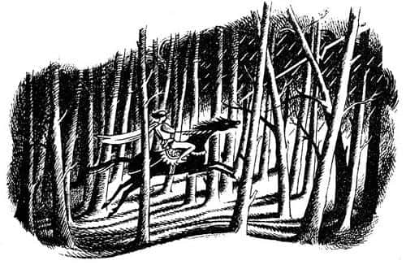
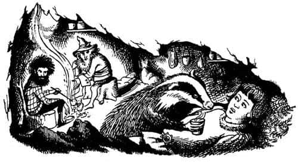

Caspian’ın Dağlardaki Macerası
Bundan sonra Caspian ve öğretmeni büyük kulenin tepesinde pek çok gizli konuşma yaptı. Her konuşmada Caspian, Eski Narnia üstüne daha fazla bilgi edindi: Öyle ki neredeyse tüm boş zamanını, düşünüp hayal kurarak ve eski günlerin geri gelmesini arzulayarak geçiriyordu. Ancak asıl eğitimi şimdi başlıyordu ve kuşkusuz, fazla boş zamanı yoktu. Kılıç kullanmayı, at binmeyi, yüzmeyi, dalmayı, ok atmayı, flüt ve çifte saplı ud çalmayı, geyik avlamayı, geyiği keserek parçalamayı ve bunların yanı sıra, konuşma sanatı, güzelyazı, edebiyat ve elbette tarih, biraz hukuk, fizik, simya ve astronomi öğreniyordu. Büyücülüğün sadece teorisini öğrenmişti, çünkü Doktor Cornelius uygulamalı kısmının prensler için uygun olmadığını söylemişti. “Ve bizzat ben” diye eklemişti, “çok acemi bir büyücüyüm ve yalnızca çok küçük büyüler yapabilirim.” Denizcilik (Doktor denizcilik için, soyluların ve kahramanların sanatı demişti) üstüne hiçbir şey öğretilmemişti, çünkü Kral Miraz gemilerden ve denizden hoşlanmıyordu.
Caspian gözlemlerinden yararlanarak da birçok şey öğrenmişti. Küçük bir çocukken, yengesi Kraliçe Prunaprismiya’dan niçin hoşlanmadığını hep merak ederdi. Artık bunun nedeninin, yengesinin de ondan hoşlanmaması olduğunu biliyordu. Yavaş yavaş Narnia’nın mutsuz bir ülke olduğunu anlamaya başlamıştı. Ağır vergiler, adaletsiz kanunlar – Miraz zalim bir adamdı.
Birkaç yıl sonra kraliçede rahatsızlık belirtileri baş gösterdi. Kalede onun için büyük bir telaş ve koşuşturma başladı; doktorlar geldi, nedimeler fısıldaştı. Bütün bunlar yaz başında olmuştu. Bir gece tüm bu telaş devam ederken, Doktor Cornelius yeni uykuya dalan Caspian’ı uyandırdı.
“Yine astronomi mi çalışacağız Doktor?” dedi Caspian.
“Sus!” dedi doktor. “Bana güven ve dediklerimi yap. Elbiselerini giy, önünde uzun bir yolculuk var.”
Caspian çok şaşırmıştı, fakat öğretmenine güvenebileceğini biliyordu; hemen söylenenleri yapmaya başladı. Elbiselerini giydiğinde Doktor, “Sana bir çanta getirdim. Yan odaya gidip siz Ekselanslarının onu yemek masasındaki yiyeceklerle doldurması gerekiyor.”
“Muhafızlarım oradadır” dedi Caspian.
“Hepsi derin uykuda, uyanmazlar” dedi doktor. “Ben çok küçük bir büyücüyüm ama en azından büyüyle uyutmasını becerebilirim.”
Aradaki kapıdan yan odaya geçtiler, sandalyelerinde sere serpe yayılmış, derin derin horuldayan iki muhafız vardı. Doktor Cornelius aceleyle birkaç dilim geyik eti kesti ve soğuk bir tavuktan kalanları, ekmeği, bir-iki elmayı, iyi bir küçük şişe şarabı çantaya koyarak Caspian’a verdi. Caspian çantayı tıpkı bir okul çantası gibi, kemerle omzuna astı.
“Kılıcın var mı?” diye sordu doktor.
“Evet” diye yanıtladı Caspian.
“Öyleyse kılıcı ve çantayı gizlemek için şu pelerini üzerine al. Evet böyle. Şimdi büyük kulede konuşmamız gerekiyor.”
Kulenin tepesine ulaştıklarında (bulutlu bir geceydi, Tarva ve Alambils’in karşılaşmasını izledikleri geceye hiç benzemiyordu) Doktor Cornelius, “Sevgili Prens” dedi, “bu kaleyi hemen terk etmeli ve şansını uzak dünyalarda denemelisin. Burada hayatın tehlikede.”
“Neden?” diye sordu Caspian.
“Çünkü Narnia’nın gerçek kralı sensin: IX. Caspian’ın gerçek oğlu ve mirasçısı X. Caspian. Yaşasın Ekselansları.” Küçük adam Caspian’ı şaşırtan bir hareketle aniden diz çöktü ve prensinin elini öptü.
“Bütün bunlar ne demek oluyor? Anlamıyorum!” dedi Caspian.
“Bunu neden daha önce hiç sormadığını merak ediyordum” dedi Doktor. “Kral Caspian’ın oğlusun ama kral değilsin. Ekselansları dışında herkes Miraz’ın bir gaddar olduğunu biliyor. Yönetime geçtiği ilk günlerde kendini kral değil, koruyucu lord olarak görüyordu. Ancak bir süre sonra iyi kalpli kraliçe, bana nazik davranan tek Telmarlı olan soylu annen öldü. Ardından babanı tanıyan tüm büyük lordlar birer birer öldü ya da ortadan kayboldu – kaza sonucu değil, tümü Miraz’ın marifeti. Belisar ve Uvilas bir av partisinde oklara kurban gitti, kaza olduğu söylendi. Passaridler tüm sülaleleri yok olana kadar kuzey cephesine devlerle savaşmaya gönderildi. Arlian, Erimon ve daha bir düzine insan haksız bir suçlamayla vatana ihanetten idam edildi. Kunduzbarajı’ndaki iki kardeş deli diye vuruldu. Son olarak da tüm Telmarlılar arasında denizden korkmayan yedi soylu lord denizlere açılıp Doğu Okyanusu’nun ötesinde yeni ülkeler aramaya ikna edildi ve planlandığı gibi asla geri dönmediler. Senin adına konuşacak kimse kalmadığında, yaltakçıları ona kral olması için yalvardılar. Ve işte şimdi kral.”
“Şimdi beni de öldürmek istediğini mi söylemeye çalışıyorsun?” dedi Caspian.
“Bu kesin” dedi Doktor Cornelius.
“Fakat neden şimdi?” dedi Caspian. “Yani eğer gerçekten bunu istiyorsa neden şimdiye kadar yapmadı? Ayrıca benim ona ne gibi bir zararım dokundu ki?”
“Sadece iki saat önce olan bir şey yüzünden senin hakkındaki fikrini değiştirdi. Kraliçe bir erkek çocuk doğurdu.”
“Bunun benimle ne ilgisi olduğunu anlayamıyorum” dedi Caspian.
“Anlamıyor musun!” dedi doktor, hayretle. “Tarih ve politika derslerinde anlattığım onca şey boşa mı gitti? Dinle. Kendi çocuğu olmadığı sürece, o öldükten sonra senin kral olmana razıydı. Senden pek hoşlanmadığını düşünsek bile, tahtta bir yabancı görmek yerine seni tercih ederdi. Artık bir oğlu olduğuna göre, bir sonraki kralın kendi oğlu olmasını isteyecektir. Artık bir engelsin. Seni yolundan temizleyecektir.”
“O gerçekten bu kadar kötü mü?” dedi Caspian. “Beni gerçekten öldürür mü?”
“Babanı öldürdü” dedi Doktor Cornelius.
Çok tuhaf duygular içinde olan Caspian, bir şey söylemedi.
“Sana bütün hikâyeyi anlatabilirim” dedi Doktor. “Fakat şimdi zamanımız yok. Hemen kaçmalısın.”
“Benimle gelecek misin?” dedi Caspian.
“Buna cesaret edemem” dedi Doktor. “Seni daha büyük tehlikeye atar bu. İki kişi, bir kişiden daha kolay izlenir. Sevgili Prens, sevgili Kral Caspian, çok cesur olmalısın. Tek başına gitmelisin, hem de hemen. Güney sınırlarını geçerek Archenland Kralı Nain’in sarayına ulaşmayı dene. O sana yardım eder.”
“Seni bir daha görebilecek miyim?” dedi Caspian titrek bir sesle.
“Umarım sevgili Kral” dedi Doktor. “Tüm dünyada siz Majestelerinden başka dostum var mı ki? Eh biraz da büyücülüğüm var. Ha, bu arada acele et. Gitmeden önce iki hediyem var sana. Bu, ne yazık ki küçük bir kese altın – biliyorsun kaledeki tüm hazineler yasal olarak senin hakkındı. Ayrıca şu da çok işine yarayacak.”
Cüce, Caspian’ın zorlukla görebildiği, ama dokununca bir boru olduğunu anladığı şeyi uzatıyordu.
“Bu” dedi Doktor Cornelius, “Narnia’nın en değerli ve kutsal hazinesidir. Gençliğimde bunu bulmak için pek çok tehlikeyi göze alıp pek çok büyü duası mırıldandım.
Narnia’nın Altın Çağı sona erdiğinde kayıplara karışan Kraliçe Susan’dan geriye kalan büyülü borudur bu. Boruyu kim çalarsa ona bir yerlerden bir yardım geleceği söylenir; ama nereden geleceğini kimse bilemez. Kraliçe Lucy, Kral Edmund, Kraliçe Susan ve Yüce Kral Peter’i geçmişten bugüne çağırma gücüne sahip olabilir ve onlar her şeyi düzene sokabilir. Ya da Aslan’ı çağırabilir. Al bunu Kral Caspian, ama çok zorda kalmadıkça kullanma. Şimdi acele, acele, acele et. Kulenin dibindeki küçük kapının, bahçeye açılan kapının kilidi açık. Orada ayrılmalıyız.”
“Atım Yıldırım’ı alabilecek miyim?” dedi Caspian.
“Atın bahçenin köşesinde eyerlenmiş olarak seni bekliyor.”
Sarmal merdivenden aşağı uzun iniş sırasında Cornelius fısıltıyla, ona izleyeceği yol hakkında bilgi verdi, nasihat etti. Caspian tüm bunları anlamaya çalışıyor ancak giderek umutsuzluğa kapılıyordu. Sonra bahçenin serin havası, doktorla ateşli bir el sıkışma, bahçenin öte yanına koşuş, Yıldırım’ın davetkâr kişneyişi – ve böylece Kral X. Caspian babasının kalesini terk etti. Geriye baktığında yeni prensin doğumunu kutlayan havai fişeklerin gökyüzüne yükseldiğini gördü.
Bütün gece boyunca, bildiği topraklarda, ormanlardaki patikaları takip ederek yol aldı. Daha sonra anayollara yöneldi. Yıldırım bu beklenmedik yolculuktan dolayı sahibi kadar heyecanlıydı. Caspian, Doktor Cornelius’a veda ederken gözyaşlarını tutamamıştı, ama şimdi kendisini cesur ve mutlu hissediyor, sol kalçasında kılıcı, sağında Kraliçe Susan’ın sihirli borusuyla kendini macera peşinde bir kral olarak görüyordu.
Ne var ki çiseleyen yağmurla birlikte sabah olduğunda, etrafına bakıp da her tarafta bilmediği ormanlar, yabani çalılıklar ve mavi dağlar gördüğünde, şu kocaman tuhaf dünyada ne kadar da çaresiz olduğunu düşünüp korkuya kapıldı.
Gün iyice ağardığında yolu terk etti. Ağaçların arasında dinlenebileceği açık ve çimenlik bir alan buldu. Yıldırım’ın dizginlerini çıkardı ve onu otlamaya bıraktı. Biraz soğuk tavuk yiyip şarap içti ve sonra da uyuyakaldı. Öğleden sonra uyandı. Bir-iki lokma bir şeyler atıştırdı ve kimsenin pek uğramadığı yollardan yine güneye doğru, yolculuğuna devam etti. Şimdi genelde yokuş tırmandığı engebeli topraklardaydı. Her sırtta, ilerideki dağların daha da büyüyüp koyulaştığını görebiliyordu. Akşam yaklaştığında uzak dağların eteklerine ulaşmıştı. Rüzgâr kuvvetlendi. Hemen ardından da bardaktan boşanırcasına yağmur yağmaya başladı. Gökgürültüleri duyuluyordu. Yıldırım huysuzlaştı. Şimdi karanlık ve sonsuz gibi görünen bir çam ormanına girmişlerdi. Ağaçların insanlara pek de dost olmadığını anlatan bütün hikâyeler Caspian’ın aklına üşüştü. Hele bir Telmarlı; yabani olan her şeye düşman, fırsat buldukça ağaçları kesen ırktan biriydi – gerçi diğer Telmarlılara benzemiyordu, ama ağaçların bundan haberi yoktu.

Evet, ağaçlar bilmiyordu. Rüzgâr boraya dönüştü ve ağaçlar Caspian’ın etrafında gıcırdayıp kükrediler. Bir düşme sesi geldi. Hemen arkasında bir ağaç yolun üzerine devrilmişti. “Sakin ol Yıldırım, sakin ol!” dedi Caspian atının boynunu okşayarak, ancak kendisi de titriyordu. Ölümden kıl payı kurtulduğunun bilincindeydi. Bir şimşek parıldadı ve güçlü bir gök gürültüsü koptu, tepelerindeki gökyüzü yarılıyordu sanki. Yıldırım ileriye fırladı. Caspian iyi bir biniciydi fakat onu durduracak gücü yoktu. Atın üzerinde durmayı başarabilmişti, ama devam eden bu vahşi koşuda hayatının pamuk ipliğine bağlı olduğunu biliyordu. Alacakaranlıkta, bir ağacın ardından başka bir ağaç önlerine çıkıyor, onlardan zorlukla kurtulabiliyorlardı. Sonunda, alnına neredeyse acı vermeyecek kadar ani bir şekilde bir şey çarptı (acısı sonradan çıkmıştı) ve her şey karardı.
Kendine geldiğinde, dayanılmaz bir baş ağrısı çekiyor, morarmış vücuduyla ateşin aydınlığında yatıyordu. Yanı başındakiler alçak sesle konuşuyordu.
“Evet, şimdi” dedi biri, “uyanmadan önce ne yapacağımıza karar vermemiz gerek.”
“Öldürelim” dedi diğeri. “Yaşamasına izin veremeyiz. Bize ihanet eder.”
“Hemen öldürmemiz ya da kendi haline bırakmamız gerekirdi” dedi üçüncüsü. “Şimdi öldüremeyiz. İçeriye getirip kafasını sardıktan, yaptığımız bunca şeyden sonra öldüremeyiz. Bu, misafiri öldürmek olur.”
“Beyler” dedi Caspian, güçsüz bir sesle, “bana ne yapacağınızı bilmem, ama umarım atıma karşı nazik olursunuz.”
“Atın biz seni bulmadan uzun süre önce kaçmıştı” dedi birincisi, Caspian’ın yeni yeni fark etmeye başladığı kaba ve boğuk, ilginç bir sesi vardı.
“Tatlı kelimelerle sizi kandırmasına izin vermeyin artık” dedi ikinci ses. “Ben hâlâ—”
“Boynuzlar ve balıklar!” dedi üçüncü ses. “Onu elbette öldürmeyeceğiz. Ayıp sana Nikabrik. Ne dersin Mantarsever? Ne yapalım ona?”
“Ben ona içecek bir şey vereceğim” dedi birincisi, tahminen Mantarsever’in sesiydi bu. Karanlık bir gölge yatağa yaklaştı. Caspian nazik bir kolun – eğer gerçekten bir kolsa – omuzlarının altına kaydığını hissetti. Kolun biçimi oldukça farklı görünüyordu. Kendisine doğru eğilen yüz de farklıydı. Caspian çok kıllı, çok uzun burunlu, her iki yanında tuhaf beyazlıkların bulunduğu bir yüz olduğu izlenimini edinmişti; “Bir tür maske” diye düşündü. “Ya da belki ateşim olduğu için hayal görüyorum.” Dudaklarına tatlı ve sıcak bir şey dokundu ve içmeye başladı. O sırada biri ateşi harladı. Büyük bir alev parladı, Caspian ani ışıkta aydınlanan, kendisine çevrili yüzü görünce az daha feryadı basıyordu. Bir insan değil bir porsuktu bu. Ancak daha önce gördüğü porsuklarınkinden daha büyük, daha dostane ve zeki görünümlü bir yüzü vardı. Konuşabildiği su götürmez bir gerçekti. Bir mağarada, süpürgeotundan yapılmış bir yataktaydı. Ateşin yanında sakallı iki küçük adam oturuyordu, Doktor Cornelius’a kıyasla daha yabansı, daha kısa boylu, kıllı ve şişmanlardı. Caspian onların gerçek cüceler olduğunu hemen anlamıştı. Damarlarında bir damla bile insan kanı olmayan eski cücelerdi bunlar. Caspian sonunda Eski Narnialıları bulduğunu anladı. O an tekrar başı dönmeye başladı.

Sonraki birkaç günde onların isimlerini öğrendi. Porsuk, Mantarsever diye çağrılıyordu; üçünün içinde en yaşlı ve en nazik olanı oydu. Caspian’ı öldürmek isteyen, huysuz bir kara cüceydi (yani saçları ve sık sakalları siyah, at kuyruğu gibi kabaydı). Adı Nikabrik’ti. Diğeri bir kızıl cüceydi. Saçları daha çok bir tilkinin tüylerine benziyordu. Onun adı da Yaygaracı’ydı.
“Ve şimdi” dedi Nikabrik, Caspian’ın oturup konuşabilecek kadar iyileştiği ilk akşam, “hâlâ bu insana ne yapacağımıza karar vermedik. İkiniz, öldürmeme izin vermeyerek ona büyük bir iyilik yaptığınızı düşünüyorsunuz. Fakat sanırım bunun sonucunda onu yaşamı boyunca esir tutmamız gerekiyor. Ben onu kendi türünün arasına dönüp bize ihanet etsin diye serbest bırakacak değilim.”
“Yumrular ve yastıklar! Nikabrik” dedi Yaygaracı. “Bu sözler sana hiç yakışmıyor. Ne gerek var buna? Kovuğumuzun önünde, ağaca kafasını çarpması bu yaratığın hatası değildi ki. Ayrıca ben onun bir hain olduğunu düşünmüyorum. ”
“Bana bakın” dedi Caspian, “geri dönmek isteyip istemediğimi sormadınız. Ben istemiyorum. Eğer izin verirseniz sizinle kalmak istiyorum. Tüm yaşamım boyunca sizleri arıyordum.”
“Ne kadar inandırıcı bir hikâye!” diye hırladı Nikabrik. “Sen bir Telmarlı insan değil misin? Elbette kendi türünün yanına dönmek istersin.”
“İstesem bile dönemem” dedi Caspian. “Kazaya uğradığımda hayatımı kurtarmak için kaçıyordum. Kral beni öldürmek istiyor. Beni öldürürseniz onun ekmeğine yağ sürmüş olursunuz.”
“Yok canım!” dedi Mantarsever.
“Ha?” dedi Yaygaracı. “Ne dedin? Senin yaşındaki bir insanoğlu Miraz’la ters düşmek için ne yapmış olabilir ki?”
Nikabrik’in eli hançerine gitti, Caspian “O benim amcam” diye söze girmişti.
“Görüyorsunuz ya!” diye bağırdı Nikabrik. Sadece Telmarlı değil, en büyük düşmanımızın akrabası ve de mirasçısı. Delirdiniz mi siz? Bu yaratığın yaşamasına izin mi vereceksiniz?” Eğer Porsuk ve Yaygaracı, önüne geçip onu zorla yerine oturtmasalardı Caspian’ı oracıkta hançerleyecekti. “Şimdi, ilk ve son kez söylüyorum Nikabrik” dedi Yaygaracı, “kendini tutabilecek misin, yoksa Mantarsever ve ben üstüne mi oturalım?”
Nikabrik suratını asarak terbiyesini takınacağına söz verdi ve diğer ikisi Caspian’dan bütün hikâyeyi anlatmasını istediler. Caspian bitirdiğinde bir an için sessizlik oldu.
“Hayatım boyunca duyduğum en tuhaf hikâye” dedi Yaygaracı.
“Bundan hoşlanmadım” dedi Nikabrik. “İnsanlar arasında hâlâ bizim hakkımızda hikâyeler anlatıldığını bilmiyordum. Bize ait ne kadar az şey bilirlerse o kadar iyi olur. O yaşlı dadıya gelince; umarım dilini tutmuştur. Ayrıca o öğretmen tekin biri değil. O, dönme bir cüce. Onlardan nefret ederim – insanlardan çok onlardan nefret ederim. Söylediklerimi aklınızdan çıkarmayın; bu işin sonu pek iyi görünmüyor.”
“Anlamadığın şeyler üstüne konuşup durma Nikabrik” dedi Mantarsever. “Siz cüceler de en az insanlar kadar unutkan ve değişkensiniz. Ben bir hayvanım, dahası bir porsuğum. Biz değişmeyiz; aynı şekilde kalırız. Ben bu durumdan büyük bir yarar sağlayacağımızı söylüyorum. Elimizdeki insan Narnia’nın gerçek kralı, gerçek Narnia’ya dönen gerçek bir kral. Ve cüceler unutsa da biz hayvanlar, bir âdemoğlunun kral olduğu zamanlar dışında, hiçbir zaman işlerin yolunda gitmediğini hatırlıyoruz.”
“Düdükler ve fırıldaklar! Mantarsever” dedi Yaygaracı. “Ülkeyi insanlara vermek istediğini söylemiyorsun değil mi?”
“Öyle bir şey söylemedim” diye cevapladı Porsuk. “Bu ülke insanlara ait değil (bunu benden iyi kim bilir ki?) fakat insanların kral olması gereken bir ülke. Biz porsukların hafızasına çok eskiden beri yerleşmiştir bu. Tanrı hepimizi korusun, Yüce Kral Peter bir insan değil miydi?”
“Bütün o eski hikâyelere inanıyor musun?” diye sordu Yaygaracı.
“Sana söylüyorum, biz hayvanlar değişmeyiz” dedi Mantarsever. “Biz unutmayız. Yüce Kral Peter’e ve Cair Paravel’de hüküm sürenlere, Aslan’a inandığım kadar inanıyorum.”
“İnancın bu kadar güçlü ha” dedi Yaygaracı. “İyi de bugün artık Aslan’a kim inanıyor ki?”
“Ben inanıyorum” dedi Caspian. “Ayrıca daha önce inanmasaydım bile, şimdi inanırdım. Orada Aslan’a gülen insanlar, konuşan hayvanlar ve cüceler hakkında anlatılanlara da gülerdi. Gerçekte Aslan diye birinin olup olmadığını hep merak etmişimdir. Gerçekte sizin gibi canlılar olup olmadığını da merak etmişimdir. İşte siz buradasınız.”
“Doğru” dedi Mantarsever. “Haklısın Kral Caspian. Sen eski Narnia’ya sadık kaldığın sürece, kim ne derse desin, benim kralım olacaksın. Yaşasın Ekselansları.”
“Beni iğrendiriyorsun Porsuk” diye hırladı Nikabrik. “Yüce Kral Peter ve diğerleri insan olabilir, fakat onlar değişik türden insanlardı. Bu ise lanetli Telmarlılardan birisi. Spor için hayvan avlamıştır. Avlamadın mı?” diye ekledi Caspian’a dönerek.
“Eh, gerçeği söylemek gerekirse avladım” dedi Caspian. “Ancak onlar konuşan hayvanlar değildi.”
“Hiç fark etmez, aynı şey” dedi Nikabrik.
“Hayır, hayır, hayır” dedi Mantarsever. “Aynı şey değil. Sen de çok iyi biliyorsun ki günümüz Narnia’sındaki hayvanlar farklı. Calormen ya da Telmar’da bulunanlar gibi, zavallı, dilsiz, akılsız yaratıklardan başka bir şey değiller. Boyları da küçük. Onlarla bizim aramızdaki fark, sizinle yarıcüceler arasındaki farktan daha büyük.”
Epeyce konuştular, sonunda Caspian’ın kalması gerektiği konusunda anlaştılar. Hatta, dışarıya çıkmayı becerir becermez Caspian’a, Yaygaracı’nın ‘diğerleri’ diye söz ettiği yaratıkları göstermeyi vaat ettiler. Anlaşılan bu vahşi topraklarda, Narnia’nın eski günlerinden kalan her türlü yaratık gizli gizli yaşıyordu hâlâ.